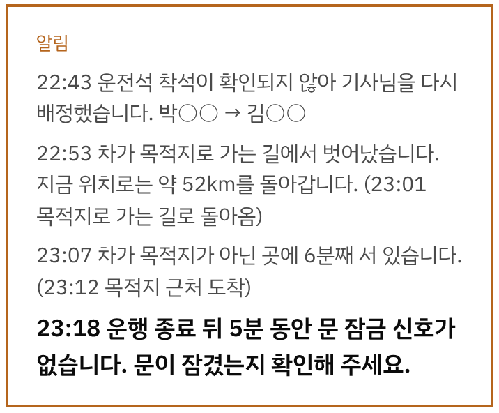

문자 예약부터 결제, 다음 날 아침까지 한 번의 대리 이용을 101초로 짠 콘티입니다. 위의 화면은 영상과 같은 시안이고, 차량 화면과 휴대폰 웹 화면은 에뮬레이터와 시연용 서버에서 찍은 실제 화면입니다. 아래 장면별 콘티에는 장면마다 화면 구성, 순서대로 일어나는 일, 화면에 나오는 문장, 자막, 내레이션을 그대로 적었습니다.

문자 대화 화면은 그림으로 그렸습니다. 대리운전 예약 문자는 아직 실제로 운영되지 않기 때문입니다. 차량 화면과 웹 화면은 에뮬레이터와 시연용 서버에서 찍은 실제 화면을 넣습니다. 지도, 좌석, 기어 그림은 차의 신호를 설명하는 그림입니다.